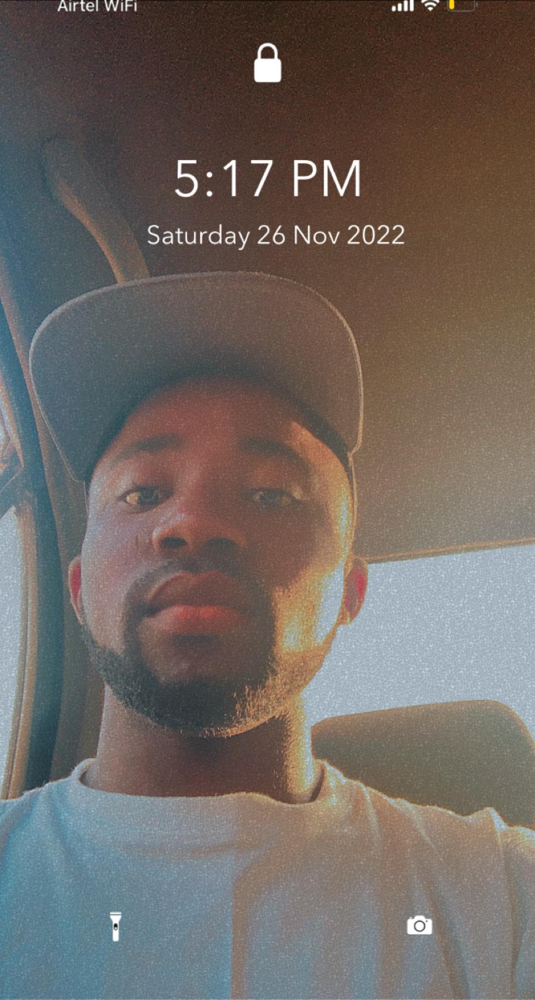
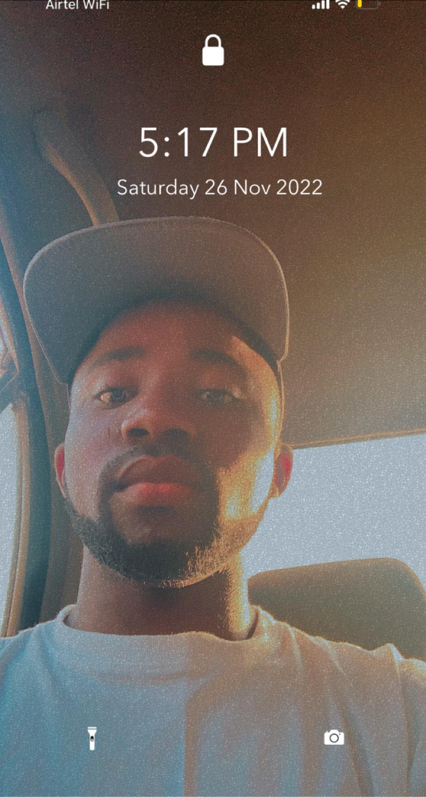

I have been someone who loves science and calculations right from my childhood. It was a great experience for me when I was introduced to physics, chemistry, mathematics, and technical drawing in my secondary school education. I realized they interestingly qualified as subjects of both science and engineering. They are defined by precise rules, principles, axioms, and more. Many of these unbound intrigued me and I decided to pursue further studies in engineering, from learning about engineering programs and learning little crude engineering work. The basic thrust of my secondary school project, experiment, has been integrative. I have well-developed analytical and mathematical skills to the great extent.
I chose Turkey scholarship for study because I would love to meet notable engineers, prize winners, Academy of science, distinguished professors of the Turkey country. The world being a competitive one in development, mostly engineering. My field of study can help in developing since development never stops, analyzing and structuring machine manufactured in the country into more convenient ones. And I am sure if given the opportunity to study in your country that attracts some of the best students of the world, it will be an environment, competitive and motivating enough to bring out the best in me.